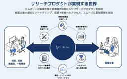
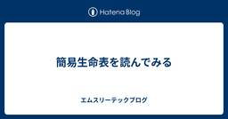
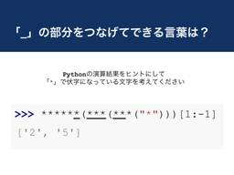

エムスリーテックブログ
https://www.m3tech.blog/
エムスリー(m3)のエンジニア・開発メンバーによる技術ブログです
フィード

プロダクトマネージャーが売ったことのないプロダクトは（爆発的には）売れない 16
16
エムスリーテックブログ
こんにちは、エンジニアリンググループプロダクトマネージャーの阪口です。 私は医師向けのアンケート調査やそのデータ分析を手掛けるリサーチプロダクトチームに所属し、チームのビジョン「データとテクノロジーを活用し、医療に関する意思決定とアクションを、無駄なく、正しく、最速にする」を実現するため、日々奮闘しています。 この記事では、あるプロダクトのリニューアルにて自らがセールス活動に奔走することで得ることができた学びを共有したいと思います。 プロダクトリニューアルの背景 クライアントからの評価と課題 俺は最強のセールスになる！ 1.顧客の解像度が上がり、売れるためのメッセージが見つかった 2.プロダク…
3日前

簡易生命表を読んでみる 1
エムスリーテックブログ
AI・機械学習チームの髙橋です。今年の健康診断結果をみてからランニングを始めました。健康大事。 さて、今回は簡易生命表という厚生労働省が毎年発表している統計資料を読んでいきたいと思います。 簡易生命表は、「ある1年において各性別/年齢の人がその年に死亡する確率」を集計して統計処理をしたものです。 表を読むと例えば、「2023年において30歳男性がその1年に死ぬ確率は0.055%」といったことが分かります。 生命表は保険数理などでの基礎統計となっていて、みなさんにとって身近なところでいうと、平均寿命はこの生命表から計算される統計量になります。
4日前

プログラミングクイズ この演算結果が得られる元のコードは？ 27
エムスリーテックブログ
こんにちは。エムスリーエンジニアリンググループの藤原です。 今回の記事ではパズルのようなプログラミングクイズを出題してみます。 自分で考えたい方は問題部分から記事を読み進めずに考えてみてください。問題の後にヒント、答えと続いています。 問題 では、問題です。 巳年(Python) '25年 なクイズということで作成してみました。 （元日あたりに作ったので [1:-1] 部分も実は"かかって"います!） 難読クイズとは少し違った趣向のクイズで、エンジニアリングとしては何の役にも立たないかもしれないですが、たまにはこういうのも面白いのではないかと思います。
6日前

poetryのバージョンを2.0.0に上げたらinstallできなくなった
エムスリーテックブログ
AI・機械学習チームの池嶋（@mski_iksm）です。AI・機械学習チームではPythonで開発しているプロダクトのパッケージ管理にpoetryを使用していますが、年明け早々こんなメッセージが出てpoetry installができなくなるトラブルが頻発しました。 Warning: The current project could not be installed: No file/folder found for package XXXXXXXXXX 2025年1月5日にリリースされたpoetry 2.0.0では、自パッケージのインストールに関する挙動が変更されました。その影響で、poet…
1ヶ月前
2024年の技術動画からオススメをまとめるぜ
エムスリーテックブログ
年末にこんにちは、こんばんは。VPoEの河合(@vaaaaanquish)です。 声優の小林裕介さん、内山夕実さんが、ご結婚されたとの事で、最近リゼロ最新話まで追いついた私も喜びを隠せません。嬉しい！ さて、本記事では2024年も終わるこの日に年末年始を楽しく過ごせる技術LT動画をいくつか紹介して、皆様によい年末を提供出来ればと思い筆を取っています。 年の暮まで技術技術でやっていきましょう！ エムスリーテックトークとは TEX嫌い大学生の闘い Firebase De Akka Actor版人狼アプリリメイク フラクタル図形をうろ覚えの式から描いてみた PlaywrightでVRT環境を整備…
1ヶ月前
エムスリーのAI・機械学習チームって何やってるの？2024年1年間で作ってきた28個のプロダクトを大公開
エムスリーテックブログ
こんにちは。エンジニアリンググループゼネラルマネジャー & 機械学習エンジニアの大垣です。 さて、私が機械学習エンジニアとして仕事をしているAI・機械学習チームでは、今年一年で28個のプロダクトをリリースしました。月に2つくらいは新規プロダクトが出てる計算ですね。なかなか高速にリリースできているのではないでしょうか。 なお、この1年で5名のメンバーが新規に加わり、チームが12人から17人になったので、来年は更に加速していきたいです！*1 これらのプロダクトを簡単にお見せしつつ、エムスリーという医療xWebの企業でMLのチームはどういう仕事をしているのか、というのをお届けできればと思います！ 多…
1ヶ月前
AIチームGoogle Kubernetes Engineオンボーディングチュートリアル
エムスリーテックブログ
こんにちは。AI・機械学習チーム（以下AIチーム）チームリーダー、兼、エンジニアリンググループゼネラルマネージャーの横本(@yokomotod)です。 AIチームでは開発したMLプロダクトの実行基盤としてGoogle Kubernetes Engine（以下GKE）を採用しています。デプロイ関連コードのテンプレートも整備され、新しいプロダクトをスタートさせるときはGKE初心者でも簡単にデプロイまで持っていけるようになっています。 しかし自動生成は一方で、なにがどうなってデプロイされているのかブラックボックスのままになってしまいがちという問題もあります。 そこで今回は、チームメンバーへのオンボー…
1ヶ月前
半年間の運用で学んだDatastream導入の勘所
エムスリーテックブログ
こんにちは、エンジニアリンググループデータ基盤チームの木田です。先日公開されたCTO兼VPoP山崎の記事にある通りゼネラルマネージャーを拝命しまして、データ活用の観点だけではなくそれ以外の側面でも組織全体を支える立場となりました。クリスマスが過ぎ、すっかり街は年末モードになりましたね。毎年この変わり身の速さに驚くとともに、新年の足音を感じる時期でもあります。 門松とクリスマス飾りが同居する年末らしい光景。エムスリー赤坂オフィスから徒歩15分の距離にある麻布台ヒルズマーケットの一角にて エムスリーのデータ基盤利用者は今年も順調に増えまして、システム (サービスアカウント)も含めると倍々で増加して…
1ヶ月前
エムスリーの全員 QA 作戦
エムスリーテックブログ
皆さんこんにちは。エンジニアリンググループゼネラルマネージャー兼 QA チームリーダーの窪田です。 1年が経つのは非常に早く、やりたかったことをやれたのかと振り返る年末になりました。 本日は私が GM になる前から力を入れてきた活動「全員QA体制への移行*1」についてお話をします。 本内容は、12/24 に取締役CTO兼VPoPの山崎がブログで話題に挙げていた「組織的ステップチェンジ」の1つでもあり、組織的なインパクトも大きな活動です。 www.m3tech.blog はじめに 現状の開発フロー 全員 QA 体制への移行 決起集会（エンジニアリンググループミーティング） 方針・目標設定と周知 …
1ヶ月前
エムスリー学生エンジニア向け情報まとめ
エムスリーテックブログ
こんにちは、最近Re:ゼロを人生で初めて見ましたVPoEの河合(@vaaaaanquish)です。もっと早く知りたかったです。 さて、エムスリーエンジニアリンググループでは、長らく新卒エンジニア採用を小さい規模で進めておりました。 2024年からは、その規模を少し拡大し、様々なイベントに出たりインターンを受け入れるなどしています。 本記事は、学生エンジニアの皆様から聞かれる事も多い内容をまとめ、エムスリーのエンジニア組織を知って頂く事を目的とするものです。 エムスリーのエンジニアインターン Rust/Go/k8sを全て触ってBatchをリリースした事例 実プロダクトのKotlinバックエンドを…
1ヶ月前
2024年にエンジニアリンググループミーティングで紹介した書籍の紹介
エムスリーテックブログ
年末にこんにちは、こんばんは。12月に長女の音楽発表会があり、長女の成長に涙したVPoEの河合(@vaaaaanquish)です。 本文とは関係ない娘と私 本記事では、エンジニアリンググループで毎月行っている全体会、Group Meetingで実施している『おまけコンテンツ』を紹介します。 オススメの書籍紹介になりますので、年末のお供に是非。 Engineering Group Meetingとは 書籍紹介 仕事に必要なことはすべて映画で学べる 熟達論 - 人はいつまでも学び、成長できる RANGE(レンジ)知識の「幅」が最強の武器になる データセキュリティ法の迷走 テクノロジーの世界経済史 …
1ヶ月前
DBテーブルのカラムを削除するときにやること・考えること
エムスリーテックブログ
突然ですが皆様は、稼働済みサービスのDBからテーブルカラムを削除されたりすること、ありますでしょうか？ 基本的に削除はまずやらないのではと思います。えっやらないの？ と思われた方もいらっしゃるかもしれませんが、きっとこの記事を読めばなぜ多くの方がカラム削除を避けるのかわかることでしょう。 とはいえ、そうして使わないカラムがテーブルに溜まっていくとやがて新規加入メンバーがコードにキャッチアップする妨げとなるレベルにまで溜まってきたりします。いつかは大掃除のときがくるわけです。DBは寿命長いですからね。そうしたときに実際どのような手順でカラムを削除するのか見ていきましょう。エムスリーエンジニアリン…
1ヶ月前
機械学習エンジニアやデータサイエンティストにもウケるノベルティが作りたい
エムスリーテックブログ
ギークな技術者の皆様、こんにちは。メリークリスマス。 リモートワークで運動不足を感じているため、VTuberのリングフィットアドベンチャーのプレイ動画を見て気を紛らわしています、VPoEの河合(@vaaaaanquish)です。 本記事はエムスリーアドベントカレンダー2024の最終日の記事にあたります。 エムスリーアドベントカレンダーには今年もギークな記事が揃っていますので、年末年始の技術研鑽のお供に是非どうぞ。 qiita.com はじめに ノベルティの下準備 digits plot wordcloud おわりに We are hiring !! エンジニア採用ページはこちら カジュアル面談…
1ヶ月前
M3におけるGitHub Copilot活用状況
エムスリーテックブログ
北海道ツーリングにて訪れた野付半島 はじめに あっあっあー こんぺこ！こんぺこ！こんぺこー！ 時期感的になんとなくこんな挨拶をしてみた @bloody_snow です。 M3エンジニアリンググループの2代目VPoEをつとめ、 @vaaaaanquish に交代してからは、 M3 Technologies にてM3のグループ会社をメインで担当しています。M3に関しては個別のサービス開発というよりかはGitHub Copilot、ChatGPT Team、GitHub Enterprise、比較的高性能なMacBookProの導入、AWSの教育受講など全体の生産性への取り組みが多くなっています。 …
1ヶ月前
2024年、エムスリーエンジニアリンググループで行った組織的ステップチェンジ5選。
エムスリーテックブログ
皆さんこんにちは、こんばんは。スノーピークのノクターン*1をすでに持っているにもかかわらず、SOTOのヒノト*2を買ってしまった取締役CTO兼VPoPの山崎です。 せっかくなので違いをレビューしておくと、SOTOのヒノトはガスを充填して持ち歩ける専用タンクがあるのは便利なのですが、意外と容量が小さく、マニュアル通り連続燃焼時間は1〜2時間と意外と短いです。もちろん、ヒノトもスノーピークのノクターン同様、OD缶に直接接続すれば一晩以上連続燃焼できると思うので、ランプ側に問題はありません。そういえば、こういうときのためにキャンピングムーンのBKTC-28というOD缶互換ガスタンクを買っておいたな、…
2ヶ月前
AI・機械学習チームベストMR(Merge Request)決定戦 2024
エムスリーテックブログ
この記事はエムスリー Advent Calendar 2024 23日目の記事です。 AI・機械学習チームの中村伊吹(@inakam00)です。 ソフトウェア開発において、優れたコードの変更は時としてアート作品のような美しさや、抜群の機能改善をもたらすことがあります。GitHubでPull Request(PR)を使ったことがある人なら、感動するようなコード修正に出会った経験があるのではないでしょうか。 エムスリーAI・機械学習チームでは、この感動を共有し称え合うために、年に一度「ベストMerge Request(MR)決定戦」を開催しています。MRとはGitLabのMerge Request…
2ヶ月前
はじめてのOSSコントリビュート
エムスリーテックブログ
こちらはエムスリー Advent Calendar 2024 22日目の記事です。 こんにちは。2024/10 から AI・機械学習チームにジョインした鴨田です。 私が所属するAIチームには、機械学習やソフトウェア開発に深い知見を持つエンジニアが集まっています。日々のコードレビューや技術議論を通じて、「こんな考え方があったのか」「この実装方法は勉強になる」と新しい発見の連続です。今回のOSSコントリビュートは、チームメンバーがspotify/luigiの問題を特定し、コントリビュートの機会として共有してくれたことがきっかけでした。 本ブログでは私がエンジニア人生で初めてOSSコントリビュートし…
2ヶ月前
「ギーク」が集う学び舎 - 11年以上続くM3 Tech Talkを支える情熱に迫る
エムスリーテックブログ
エムスリーでは、社員の技術力向上と交流を目的とした社内勉強会「M3 Tech Talk」を定期的に開催しています。Tech Talkは、2013年から続く歴史ある勉強会で、毎回様々なテーマの発表が行われ、社員から好評を得ています。今回は、6年半という長きにわたりTech Talkのオーガナイザーを務めた星川にインタビューを行い、Tech Talkの裏側や、オーガナイザーとしての苦労、そしてTech Talkに対する熱い想いを伺いました。
2ヶ月前
BigQueryでJSONをテーブルに自動変換できるようにしてみた
エムスリーテックブログ
こちらはエムスリー Advent Calendar 2024の20日目の記事です。 デジスマチームの田口です。 デジスマ診療（以降デジスマ）はQRコードによるチェックインや自動後払い、オンライン診療など新しい医療体験を提供するサービスです。 www.youtube.com ありがたいことにサービスは成長し続けており、これに伴ってKPIの深掘りや施策の効果検証のためのデータ分析もより積極的に行われるようになってきました。 デジスマチームではデータ分析基盤にBigQueryを利用しており、Amazon Auroraや各種ログデータをBigQueryに連携し、様々な分析をしています。 多種多様なデー…
2ヶ月前
インターンではじめてのプロダクト開発を経験した話【ソフトウェアエンジニアインターン参戦記】
エムスリーテックブログ
はじめに 11月末から2週間、エンジニアリンググループ AI・機械学習チームでの新卒ソフトウェアエンジニアインターンに参加した山口 (@chimaki_yama821)です。この記事では私が取り組んだことと2週間の感想について書いたので、エムスリーが気になっているという他の学生の参考になれば幸いです。 最終日に撮ってもらった写真
2ヶ月前
「知ってるつもり」からの脱却：売上構造の解像度を上げるプロダクトマネジメント
エムスリーテックブログ
この記事はエムスリーAdvent Calendar 2024の19日目の記事です。 こんにちは。エンジニアリンググループ プロダクト支援チームでプロダクトマネージャーをしている中村です。私は現在、医師向けのライブ動画配信サービスである「Web講演会」というプロダクトにプロダクトマネージャーとして携わっています。今回の記事では、Web講演会のグロースに取り組む中での学びをご紹介します。 はじめに 「知らないこと」を認識する 「知らないこと」を知るためにやったこと フォーカスする（まずはみかんの売上を2倍に伸ばす） まとめ：プロダクトマネージャーは自信と謙虚さのバランスが大事 We are hir…
2ヶ月前
Javaバッチのクラウド移行プロジェクトの泥臭い挑戦
エムスリーテックブログ
この記事はエムスリー Advent Calendar 2024 の18日目の記事です。 こんにちは、基盤チームエンジニアの桑原です。最近はKeychron Q11を購入してキーボードライフを楽しんでいます。昨日はキースイッチの交換に失敗し、10年ぶりにはんだ付けをして何とか事なきを得ました。 はんだ付けしたら巨大な鉛の塊ができてしまったの図 本日は私が半期取り組んでいたJavaバッチのオンプレからクラウドリフトプロジェクトについて紹介します。なかなか泥臭い作業が多かったのですが、ありのままの仕事内容をお伝えします。 概要 システムの概要 プロジェクトの概要 プロジェクトの背景 脱オンプレを進め…
2ヶ月前
GPUで高速なモデル推論を実現するために考えること -FlashAttentionはなぜ高速か-
エムスリーテックブログ
こちらはエムスリー Advent Calendar 2024 17日目の記事です。 AI・機械学習チームの髙橋です。チームでは先週からNeurIPS読み会が開催されており、"Deep Learning Architecture, Infrastructure"という深層学習のアーキテクチャに関するセッションを担当しました。その中でも興味深い一本として"You Only Cache Once: Decoder-Decoder Architectures for Language Models"という論文を勉強会まとめブログで紹介してます。 www.m3tech.blog この論文ではLLMの推論…
2ヶ月前
友達の友達が多い！友達パラドックスについて
エムスリーテックブログ
エンジニアチームのUK. ( @ukohank517 )です。このブログはエムスリーアドベントカレンダー15日目の記事です。 今日は友達に関すパラドックス(Friendship Paradox)について紹介したいと思います！ はじめに 友達パラドックスとは？ 友達数のシミュレーションをしてみよう まとめ 追記 We are hiring !! エンジニアの採用ページはこちら カジュアル面談もお気軽にどうぞ インターンも常時募集しています はじめに 実は10年も前の論文で発表された内容なんですが、最近見かけて読んだら思わず「えっ、こんなことあるんだ！」と驚いてしまったんです。 気になる方はこちら…
2ヶ月前
リサーチプロダクトチームがここ最近やってることをざっくり紹介するぜ
エムスリーテックブログ
こんにちは、エムスリーエンジニアリンググループ/ BIR(Business Intelligence and Research) チーム の遠藤(@en_ken)です。 BIRはアンケートシステムをはじめとするリサーチプロダクトを開発しているチームです。チームの詳しい紹介は次の資料を読んでいただければと思います。 speakerdeck.com ここ1年ほどでチームの様相は様変わりしました。 一時期エンジニア3,4名ほどしかいなかったチーム状況から現在はエンジニアだけでも9名まで増え、PdMが2名参画したことで開発状況もこれまで以上に活況になってきています。開発スタイルも個人開発に近かったもの…
2ヶ月前
NeurIPS2024が開催中なので、エムスリー AI・機械学習チームの推し論文を勝手に紹介するぜ！
エムスリーテックブログ
こんにちは。エンジニアリンググループのAI・機械学習チームに所属している鴨田 です。 このブログはエムスリーアドベントカレンダー14日目の記事です。 弊チームでは毎週1時間の技術共有会を実施しており、各自が担当するプロダクトの技術や、最近読んだ論文を紹介しています。今週はNeurIPS2024が開催されていることもあり、同学会の論文読み会となりました。1セッション1名の担当で、各自がセッション内で気になった論文の詳細を解説します。本ブログではその一部として、セッションごとの「推し論文」を紹介します。 DALL-E 3で生成した「機械学習エンジニアが勉強会でお気に入りの記事について楽しそうに雑談…
2ヶ月前
【pmconf 2024】クライス&カンパニーのDiscord企画振り返り：プロダクトマネージャーにとってのホームランとは？
エムスリーテックブログ
こんにちは、こんばんは。今年も年末年始は12/25〜1/5まで連休を取ってみた取締役CTO兼VPoPの山崎です。最近はUL装備*1を充実させる日々を過ごしております。 本ブログはプロダクトマネージャー Advent Calendar 2024の14日目の記事です*2。 プロダクトマネージャー Advent Calendar 2023は乗り遅れて枠を取れなかったのですが、その前のプロダクトマネージャー Advent Calendar 2022には以下の記事をポストしていますので、是非ごらんください。 www.m3tech.blog 先日のUL装備キャンプ。Enlightened Equipmen…
2ヶ月前
gitレポジトリ考古学に使う道具
エムスリーテックブログ
こちらはエムスリーAdvent Calendar 2024 13日目の記事です。 こんにちは、エムスリーエンジニアリンググループの福林 (@fukubaya) です。 今回は、長年運用されてきたレポジトリをgitを使って発掘する上で使っている道具を紹介します。 福岡タワー（ふくおかタワー）は、福岡県福岡市早良区のシーサイドももち地区にあるランドマークタワー（電波塔）。本文には関係ありません。 帳票環境 レポジトリからDBテーブルの使用箇所を探す スケジュール設定だけ消される gitレポジトリ考古学 ファイルが消えたコミットを知りたい ある記述が消えた(追加された)コミットを知りたい あるテーブ…
2ヶ月前
Rails 4.2 から 7.1 まで一気にバージョンアップした話
エムスリーテックブログ
こちらはエムスリー Advent Calendar 2024 12日目の記事です。 こんにちは。エムスリーエンジニアリンググループ、コンシューマチームの園田です。 今年になって、かなり古い Rails を最新バージョンまでアップグレードしました。そのときの話です。かなりポエムに近い内容になっていますがご容赦ください。 特に何か変わったことをやっているわけではありませんが、あるあるを共感したもらったり、こんなことやってますという紹介だと思っていただければ幸いです。
2ヶ月前
BigQueryのLanguage Serverであるbqlsを作っている話
エムスリーテックブログ
AI・機械学習チームの北川(@kitagry)です。 このブログはエムスリーアドベントカレンダー11日目の記事です。 このブログではタイトル通りOSSで作成しているbqlsというLanguage Serverについて紹介します。 github.com 座ってたら遊んでほしすぎて絡んでくる猫（本文とは関係ありません）
2ヶ月前